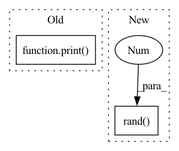

Pattern ID :23146

Before Change
flat = samples.view(-1)
print(_multinomial_prob(flat, torch.ones(10)))
// plt.hist(flat.int().numpy(), 10, density=True)
// plt.show()
After Change
def test_greedy_sampler():
torch.manual_seed(123)
logits = torch.rand(2, 10, 5000)
samples = sampling.GreedySampler()(logits)
assert samples.shape == (2, 5000)
assert chi2_test(samples.view(-1), torch.ones(10) * 0.1)
In pattern: SUPERPATTERN
Frequency: 3
Non-data size: 2
Instances
Fragment ID: 73111689
Project Name: cheind/autoregressive
Commit Name: bd9eb01183a89771ea325551b59720b4f8ce0140
Time: 2021-11-11
Author: christoph.heindl@gmail.com
File Name: autoregressive/tests/test_sampling.py
M Class Name: AnonimousClass
N Class Name: AnonimousClass
M Method Name: test_greedy_sampler(0)
N Method Name: test_greedy_sampler(0)
M Parent Class:
N Parent Class:
M File Name: autoregressive/tests/test_sampling.py
N File Name: autoregressive/tests/test_sampling.py
M Start Line: 48
M End Line: 50
N Start Line: 34
N End Line: 46
'>
Before Change
data = Variable(data).float()
dp = self.net(data)
print(dp.shape)
param += dp
loss = qmc_loss(param,data)
self.opt.zero_grad()
After Change
def train(self,nepoch):
pos = self.sample()
pos = torch.rand(3,self.sampler.nwalkers)
dataset = QMC_DataSet(pos)
dataloader = DataLoader(dataset,batch_size=self.batchsize)
qmc_loss = QMCLoss(self.wf,method="variance")
'>
Fragment ID: 73111686
Project Name: nlesc-jcer/qmctorch
Commit Name: 81d318304529d9586b1c6e9d5407be8851a1b00f
Time: 2019-05-06
Author: nicolas.gm.renaud@gmail.com
File Name: pyCHAMP/solver/neural_net.py
M Class Name: NN
N Class Name: NN
M Method Name: train(2)
N Method Name: train(3)
M Parent Class: SOLVER_BASE
N Parent Class: SOLVER_BASE
M File Name: pyCHAMP/solver/neural_net.py
N File Name: pyCHAMP/solver/neural_net.py
M Start Line: 66
M End Line: 93
N Start Line: 58
N End Line: 87
'>
Before Change
// fit
ensemble.fit(x=x, y=y, conf_train=conf_train)
print("dummy")
After Change
ensemble.fit(x=x, y=y, conf_train=conf_train)
// predict
x_test = torch.rand(1, feat_dim)
meanvar = ensemble.predict(x_test)
print("done")
'>
Fragment ID: 73111685
Project Name: microsoft/archai
Commit Name: 025285bcf86a162695c36fed569d0a7d67ea143a
Time: 2022-12-16
Author: dedey@microsoft.com
File Name: scripts/misc/predictive_dnn_ensemble_test.py
M Class Name: AnonimousClass
N Class Name: AnonimousClass
M Method Name: main(0)
N Method Name: main(0)
M Parent Class:
N Parent Class:
M File Name: scripts/misc/predictive_dnn_ensemble_test.py
N File Name: scripts/misc/predictive_dnn_ensemble_test.py
M Start Line: 22
M End Line: 22
N Start Line: 8
N End Line: 26